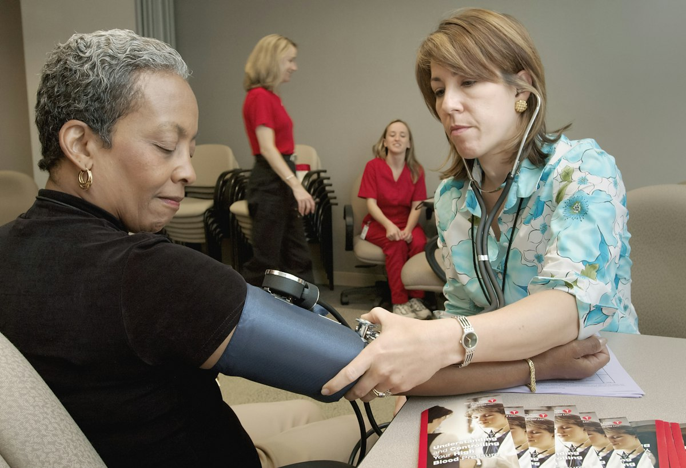

رعاية الولادة والأمومة
كل ما ترغبين بمعرفته عن الولادة بدون ألم وإبرة الظهر (Epidural)
د. سوزان محمد عيسى
•
مجمع مورال الطبي
•
قراءة 4 دقائق
تعد مرحلة الولادة من أسمى وأهم اللحظات في حياة كل امرأة، إلا أن الخوف من ألم المخاض قد يسبب توتراً وقلقاً شديدين للأم طوال أشهر الحمل. بفضل التقدم الطبي المعاصر، أصبحت "الولادة بدون ألم" واقعاً مريحاً ومتاحاً بأعلى معايير السلامة.
ما هي تقنية التخدير فوق الجافية (Epidural)؟
هي إجراء طبي آمن يتم فيه حقن دواء مسكن ومخدر موضعي في الفراغ فوق الجافية المحيط بالحبل الشوكي في أسفل الظهر. يؤدي ذلك إلى حجب إشارات الألم القادمة من الرحم والمهبل، دون أن يفقد المريضة وعيها أو قدرتها على الحركة والدفع الطبيعي أثناء الولادة.
مميزات الولادة بدون ألم:
- السيطرة التامة على الألم: تخفيف انقباضات الرحم المؤلمة لتتمكن الأم من الاسترخاء والتنفس بهدوء.
- تقليل التوتر والإجهاد الجسدي: تجنب الإنهاك العضلي وضيق التنفس الناتج عن البكاء أو الصراخ من الألم.
- استقبال المولود بكامل الطاقة والابتسامة: تكون الأم واعية تماماً للحظة خروج طفلها لتضمه إلى صدرها فوراً.
- مرونة في حال الحاجة لجراحة: إذا استدعت الحالة تحويل الولادة إلى قيصرية طارئة، يمكن تمديد جرعة المخدر دون الحاجة لتخدير كلي.
كلمة ورأي دكتورة سوزان محمد عيسى:
"إبرة الظهر خيار طبي راقٍ ومدروس بعناية، ولا يتم اتخاذ قرارها إلا بعد فحص طبي شامل للمريضة وتقييم تخثر الدم واستقرار مؤشراتها الحيوية. سلامتكِ وراحتكِ هما أولويتنا المطلقة في مجمع مورال الطبي."
التجميل والتجديد النسائي
حقائق عن الليزر الوردي وتجديد الأنسجة النسائية غير الجراحي
د. سوزان محمد عيسى
•
مجمع مورال الطبي
•
قراءة 5 دقائق

يواجه جسم المرأة بعد الولادات الطبيعية المتكررة ومع التقدم في العمر تغيرات فسيولوجية تؤدي إلى ارتخاء الأنسجة، جفاف المهبل، أو تسرب البول الخفيف. اليوم، يوفر التجميل النسائي غير الجراحي حلولاً فعالة بدون مشرط جراحي أو فترة نقاهة طويلة.
كيف يعمل الليزر المهبلي لتجديد الأنسجة؟
يقوم جهاز الليزر المتخصص بإرسال ومضات حرارية خفيفة ومدروسة للغاية إلى طبقات الغشاء المخاطي الداخلي. هذا التحفيز الحراري ينشط الخلايا الليفية لإفراز ألياف الكولاجين والإيلاستين الجديدة، مما يؤدي إلى:
- تضييق القناة المهبلية واستعادة المرونة والتماسك الطبيعي.
- تجديد بطانة المهبل وعلاج الجفاف المزمن والحكة والانزعاج.
- تحسين السلس البولي الإجهادي الناتج عن السعال أو الرياضة أو الضحك.
حقن البلازما الغنية بالصفائح (PRP / O-Shot)
يتم سحب كمية بسيطة من دم المراجعة وفصل الصفائح الدموية المركزة المحملة بعوامل النمو الطبيعية، ثم إعادة حقنها بأمان تام. تعمل البلازما على تجديد الأوعية الدموية الدقيقة ورفع كفاءة النهايات العصبية وترطيب الأنسجة بشكل حيوي مذهل.
خصوصية ورعاية نسائية متكاملة:
"جميع الجلسات تجرى في عيادتنا بمجمع مورال الطبي في جو من السرية والخصوصية التامة، وتحت إشراف كادر نسائي متكامل لا يسبب أي إحراج، مع عودة فورية للحياة اليومية."
تشخيص وصحة الجنين
التوقيت الذهبي للسونار رباعي الأبعاد 4D للاطمئنان على طفلكِ
د. سوزان محمد عيسى
•
مجمع مورال الطبي
•
قراءة 3 دقائق

يعد السونار رباعي الأبعاد (4D Ultrasound) من أروع اللحظات التي تجمع الوالدين بجنينهم، حيث يمنحكِ صوراً حية ومتحركة بملامح واضحة ومجسمة بدقة فائقة تفوق السونار التقليدي ثنائي الأبعاد.
ما هو التوقيت الأفضل لإجراء السونار 4D؟
الفترة الذهبية والمثالية لإجراء الفحص هي بين الأسبوع 26 والأسبوع 32 من الحمل:
- قبل الأسبوع 24: تكون طبقة الدهون تحت جلد الجنين رقيقة جداً، وتظهر ملامح الوجه عظمية قليلاً.
- بين الأسبوع 26 و 32: تكون ملامح الوجه مكتملة وممتلئة بشكل طبيعي كأنه مولود حقيقي، وتكون حركة يديه ورجليه وابتسامته واضحة ومؤثرة جداً.
- بعد الأسبوع 34: قد ينزل رأس الجنين إلى الحوض أو تقل كمية السائل الأمنيوسي حول الوجه مما يصعّب التقاط صور واضحة.
الأهمية الطبية التشخيصية:
لا يقتصر السونار 4D على الجانب العاطفي الجميل، بل يشكل ركيزة إكلينيكية أساسية لفحص:
- سلامة العمود الفقري والجمجمة والقفص الصدري.
- استبعاد الشفة الأرنبية وتشوهات الوجه والأطراف بدقة متناهية.
- تقييم نمو الأعضاء الداخلية وتدفق الدم عبر الحبل السري والمشيمة.
نصيحة قبل زيارة جلسة السونار 4D:
"ننصح الأم بشرب كمية وافرة من الماء في الأيام التي تسبق الفحص لزيادة نقاء السائل الأمنيوسي، وتناول وجبة خفيفة أو عصير طبيعي قبل الفحص بنصف ساعة لتحفيز حركة الجنين والتقاط أجمل اللقطات التذكارية."